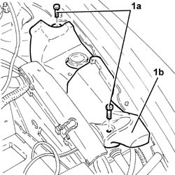
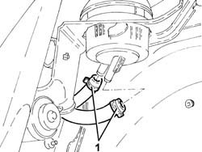
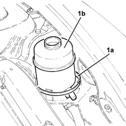
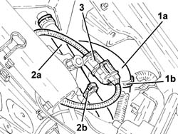
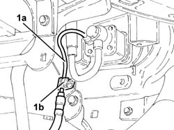
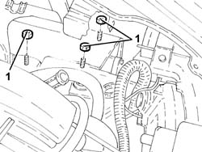
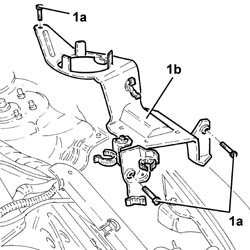
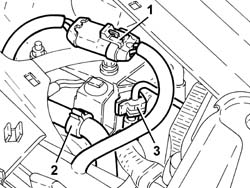
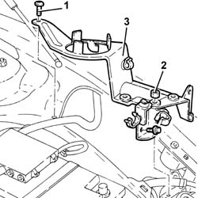

2127C10 support for hydraulic circuit reservoir and system pump - r r
- Path
- Procedures > 21 GEARBOX > 2127 ELECTRO-HYDRAULIC SELECTION. GEARBOX EXTERNAL. CONTROLS > 2127C hydraulic gear selection system > 2127C10 support for hydraulic circuit reservoir and system pump - r r
- Kind
- repair procedure (removal / refitting; the operation number is the code)
- Applies to
- engines: 2.0 TS, 3.2 V6; all production periods
- Interactive page
- https://sloeber94.github.io/elrnDB-a147/en/#/3025145
Applies to: engines: 2.0 TS; all production periods; only with equipment: Cambio robotizzato
 Removing
Removing
 Refitting
RefittingPosition the vehicle on the ramp.
Proceed with the removal 5530B10 battery - r+r .
Proceed with the removal 4450B12 front or rear wheels (two) - r+r .
Proceed with the removal 7055B42 Additional FRONT WHEEL ARCH (one), left or right - R.R. (Right and left sides).
Proceed with the removal 7055B54 under-engine guard - r r .
Proceed with the removal 7210E10 R.R. CENTRE PILLAR .
Undo the electro-hydraulic selection gearbox hydraulic circuit fluid reservoir cap and drain the reservoir using a suitable syringe.
1. Undo bolts (1a) and remove protection (1b).

Applies to: engines: 2.0 TS; all production periods; only with equipment: Cambio robotizzato
1. Working via the wheel arch, disconnect the supply and return pipes from the electro-hydraulic selection gearbox hydraulic circuit fluid reservoir.

Applies to: engines: 2.0 TS; all production periods; only with equipment: Cambio robotizzato
1. Loosen the band (1a) and remove the electro-hydraulic selection gearbox hydraulic circuit fluid rerservoir (1b).

Applies to: engines: 2.0 TS; all production periods; only with equipment: Cambio robotizzato
1. Release the pipe from the reservoir to the electric pump (1a) from the fastening on the support.
2. Release the actuator/reservoir pipe (2a) from the fastening on the support.
3. Release the electrical connection for the hydraulic circuit pump from the fastening on the support.

Applies to: engines: 2.0 TS; all production periods; only with equipment: Cambio robotizzato
1. Release the pipe from the electric pump to the actuator (1a) from the fastening (1b) on the support.

Applies to: engines: 2.0 TS; all production periods; only with equipment: Cambio robotizzato
1. Undo the nuts fixing the hydraulic circuit electric pump to the support.

Applies to: engines: 2.0 TS; all production periods; only with equipment: Cambio robotizzato
1. Undo the bolts (1a) and remove the support for the the hydraulic circuit fluid reservoir and the electro-hydraulic selection gearbox system electric pump (1b).

Applies to: engines: 2.0 TS; all production periods; only with equipment: Cambio robotizzato
Refitting
RemovingPlace the support for the hydraulic circuit fluid reservoir and electro-hydraulic selection system electric pump back in its housing and secure it to the bodyshell using the bolts.
Tighten the new self-locking nuts fixing the hydraulic circuit electric pump to the support.
Secure the electrical connection for the hydraulic circuit electric pump to the fastening on the support.
Secure the pipe for the actuator/reservoir to the fastening on the support.
Secure the pipe from the electric pump to the actuator to the fastening on the support.
Secure the pipe from the reservoir to the electric pump to the fastening on the support.
Place the electro-hydraulic selection gearbox hydraulic circuit fluid reservoir back in its housing and secure it using the band.
Working via the wheel arch, connect the supply and return pipes from the electro-hydraulic selection gearbox hydraulic circuit fluid reservoir.
Place the protection back in its housing and secure it using the bolt.
Check the level of the fluid in the electro-hydraulic selection gearbox hydraulic system and top it up, if necessary 2127C04 ELECTROHYDRAULIC selection gearbox hydraulic system FLUID - Check level and top up if necessary. .
Bleed the air from the electro-hydraulic selection gearbox hydraulic system 2127C06 Electro-hydraulic selection manual gearbox HYDRAULIC SYSTEM - Bleeding air .
Proceed with the refitting 7210E10 R.R. CENTRE PILLAR .
Proceed with the refitting 7055B54 under-engine guard - r r .
Proceed with the refitting 7055B42 Additional FRONT WHEEL ARCH (one), left or right - R.R. (Right and left sides).
Proceed with the refitting 4450B12 front or rear wheels (two) - r+r .
Proceed with the refitting 5530B10 battery - r+r .
Remove the car from the ramp.
Applies to: engines: 3.2 V6; all production periods; only with equipment: Cambio robotizzato
Removing
RefittingProceed with removal 2127C12 hydraulic gear selection fluid reservoir - r r .
1. Release the electrical connection for the electro-hydraulic selection system electric pump from the support.
2. Release the pipe between the electro-hydraulic selection hydraulic unit and the fluid reservoir from the band on the support.
3. Release the pipe between the electric pump and the electro-hydraulic selection hydraulic unit from the band on the support.

Applies to: engines: 3.2 V6; all production periods; only with equipment: Cambio robotizzato
1. Undo the bolts fixing the support for the hydraulic circuit fluid reservoir and the electro-hydraulic selection system electric pump to the bodyshell.
2. Undo the nuts fixing the electric pump to the support for the hydraulic circuit fluid reservoir and the electro-hydraulic selection system electric pump.
3. Remove the support for the hydraulic circuit fluid reservoir and electro-hydraulic selection system electric pump.

Applies to: engines: 3.2 V6; all production periods; only with equipment: Cambio robotizzato
Refitting
RemovingPlace the support for the hydraulic circuit fluid reservoir and electro-hydraulic selection system electric pump back in its housing.
Tighten the new self-locking nuts fixing the electric pump to the support for the hydraulic ricuit fluid reservoir and electro-hydraulic selection system electric pump.
Tighten the bolts fixing the support for the hydraulic circuit fluid reservoir and electro-hydraulic selection system electric pump to the bodyshell.
Fix the pipe between the electric pump and the electro-hydraulic selection hydraulic unit to the support using the band.
Fix the pipe between the electro-hydraulic selection hydraulic unit and the fluid reservoir to the support using the band.
Fix the electrical connection for the electro-hydraulic selection system electric pump to the support.
.Proceed with refitting 2127C12 hydraulic gear selection fluid reservoir - r r .
.Proceed with refitting 0010T47 hydraulic system fluid for gearbox with hydraulic selection check level and top up if necessary .
Topics linked from this page (9)
- 0010T47 hydraulic system fluid for gearbox with hydraulic selection check level and top up if necessary
- 2127C04 ELECTROHYDRAULIC selection gearbox hydraulic system FLUID - Check level and top up if necessary.
- 2127C06 Electro-hydraulic selection manual gearbox HYDRAULIC SYSTEM - Bleeding air
- 2127C12 hydraulic gear selection fluid reservoir - r r
- 4450B12 front or rear wheels (two) - r+r
- 5530B10 battery - r+r
- 7055B42 Additional FRONT WHEEL ARCH (one), left or right - R.R.
- 7055B54 under-engine guard - r r
- 7210E10 R.R. CENTRE PILLAR